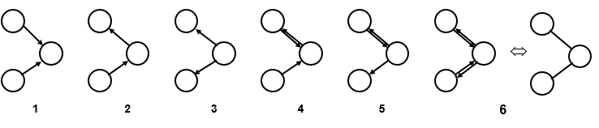
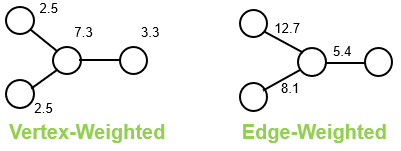
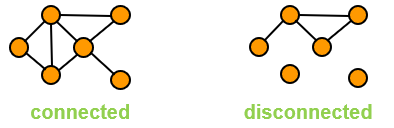
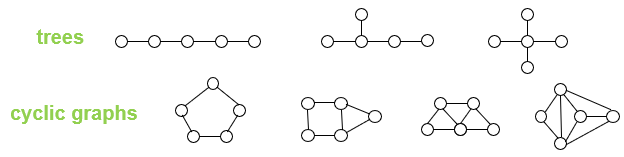
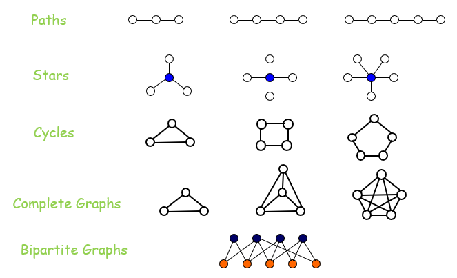
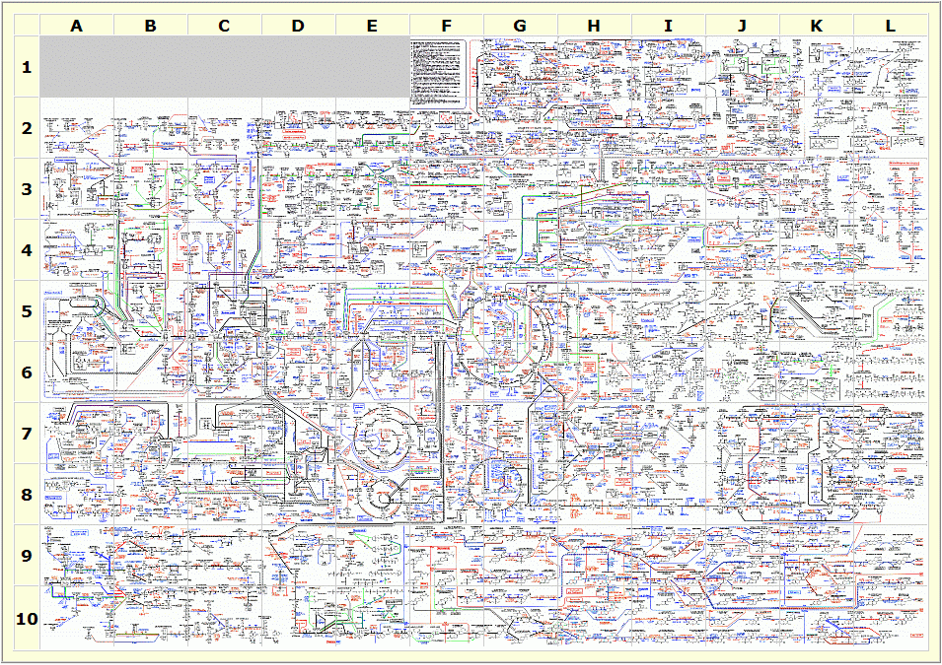
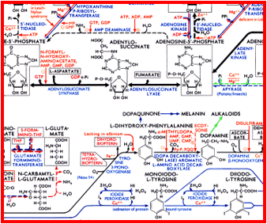
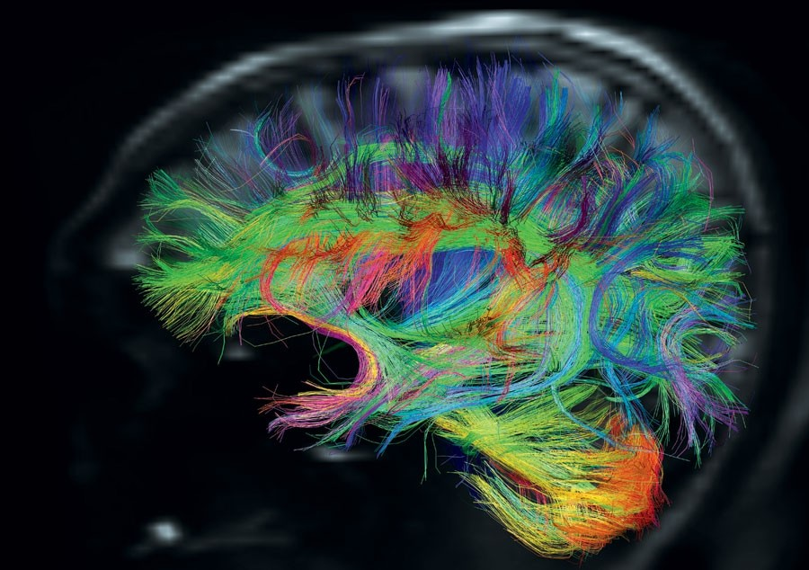
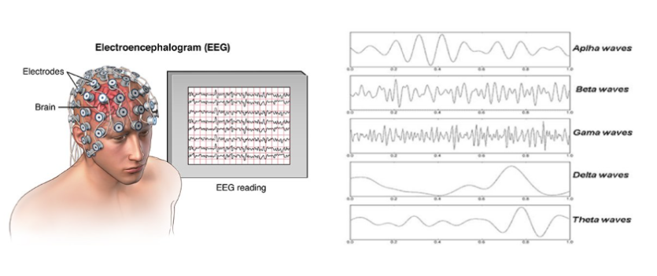

Topics in Mathematical Biology
Lecture 1
Jonathan Crofts
Nottingham Trent University
Topics in Maths Bio L1
- Introductory slides
- Complex Networks in Biology
Course Information
Lecturer: Dr Jonathan Crofts
MAE: Room 303
Email: jonathan.crofts@ntu.ac.uk
Timetable
Lecture: 11-12, Wednesday ABK 111
Computer Lab: 12-13, Wednesday ABK 106
Office hours
9:00-10:00 Monday
Module content
- Introduction and basic concepts
- Basic graph theory
- Adjacency relations
- Network measures
- Network models
- Random graphs
- Small-world networks
- Summary statistics
- Centrality measures
- Modularity
Reading list
- You will probably not need to buy a book for this module as notes are provided, as well as supplementary material during seminars and via the University's virtual learning service
- However, the following books cover most of the material to be presented as well as providing a good basis for additional reading and learning
- Estrada E. (2012), The structure of complex networks: theory and applications
- Newman M. (2010), Networks: an introduction
- Buchanan M. (2010), Networks in cell biology
- Zinoviev D. (2018), Complex network analysis in Python: recognise-construct-visualise-interpret
Assessment
- The module consists of two elements
- Element 1: Differential Equations in Biology
- January exam (50%)
- Element 2: Networks in Biology
- Coursework (50%)
- See NOW for assessment details
- Seminars are absolutely vital for high attainment in this course as this is were we will learn Python
- GOOD LUCK!!!
Topics in Mathematical Biology L1
- Introductory slides
- Complex Networks in Biology
What passes for a complex network?
- Complex networks are large (in node number)
- Complex networks are sparse (low edge to node ratio)
- Complex networks are usually dynamic and evolving
- Complex networks can be social, economic, natural, informational, ...
- Our focus will be on biological networks
- Isn't this just a graph?
- Yes, but the emphasis is on data and mechanisitic explanations...
What is a Network?
- Network is a mathematical structure composed of points connected by lines
\begin{align*} \text{Network Theory} \qquad&\longleftrightarrow\qquad \text{Graph Theory}\\ \text{Network} \qquad&\longleftrightarrow\qquad \text{Graph}\\ \text{Nodes} \qquad&\longleftrightarrow\qquad \text{Vertices}\\ \text{Links} \qquad&\longleftrightarrow\qquad \text{Edges (Lines)}\\ \end{align*}
A network can be built for any functional system
\[ \text{System Vs Parts} \qquad = \qquad \text{Networks Vs Nodes} \]Networks can be directed
- Networks can be directed or undirected,
depending upon whether the interaction between two neighbouring nodes proceeds in both directions or in
only one of them, respectively

- The specificity of network nodes and links can be quantitatively characterised by
weights

Networks can be connected
- A network can be connected (presented by a single component) or disconnected (presented by several disjoint components) 
- Networks having no cycles are termed trees. The more cycles the network has, the more complex it is. 
Simple network models
Historical perspective
- Systems approach: thinking about networks
- The focus moves from elements to their interactions
- To a certain degree, the structural details of each element become less important than the network of interactions
- Some system properties, such as robustness, fragility, modularity, hierarchy, evolvability, redundancy (and others) can be better understood through a network approach
- Some milestones:
- 1998: Small-world networks (D Watts and S Strogatz)
- 1999: Scale-free networks (R Albert and AL Barabasi)
- 2002: Network motifs (U ALon)
Networks in complex systems
- Complex systems
- Large number of interacting components
- All components and/or interactions are different from each other
- Paradigms:
- $10^4$ types of proteins in an organism
- $>10^6$ routers in the internet
- $>10^9$ web pages in the WWW
- $>10^{11}$ neurons in a human brain
- The simplest property
- Complex networks are the backbone for complex dynamical systems
Why study the topology of networks?
- Lots of easily available data
- Large networks may contain information about basic design principles and/or evolutionary history of complex systems
- This is similar to paleontology:
- learning about an animal from its skeleton
Examples of biological networks
- Biological systems represented as networks
- Protein-protein interaction networks
- Gene regulation networks
- Gene co-expression networks
- Metabolic pathways
- The food web
- Neural networks
Metabolic networks
- Citric acid cycle
- Metabolites particpate in chemical reactions
Metabolic networks (ctd)
Biochemical pathways
 
Metabolic networks (ctd)
Pathways can be turned into networks using databases such as the KEGG database
Protein binding networks
Two examples of protein interaction networks:
- Bakers's yeast (S. cerevisiae)
- Nermatode worm (C.elegans)
Nodes are proteins and they are connected if they physically bind

Protein network of Drosphila
The Drosophila fly is a model organism often used in studying aging diseases such as Alzhiemer's (lifespan ~ 70 days)
Protein communities
- Matrix counting PPI interactions
- Groups of highly connected proteins evident
- Suggests these proteins are `functionally connected'
Brain networks
Neuronal network of the C. elegan worm
Nodes are neurons and connections mean two neurons are physically connected
Brain networks
- Modern MRI techniques allow us to construct network descriptions of the brain in vivo
- Nodes are regions of the brain (neuronal ensembles) and connections are axon bundles connecting these regions

Neural modelling

- There are approximately 100 billion neurons in the brain with each electrode measuring the average
activity of 100s of thousands of neruons
- Brain dynamics can be modelled using network models of the form
\[
\frac{\mathrm{d}u_i}{\mathrm{d}t} = \frac{1}{\tau_i}\left(-u_i(t) + \sum_{j=1}^N w_{ij} f(u_j(t))\right)\quad i=1,\ldots, N
\]
- $u_i$ is neural activity from the $i$th node and $w_{ij}$ is the connectivity matrix
\[ \frac{\mathrm{d}u_i}{\mathrm{d}t} = \frac{1}{\tau_i}\left(-u_i(t) + \sum_{j=1}^N w_{ij} f(u_j(t))\right)\quad i=1,\ldots, N \]
Lecture 1 Review
- In this lecture we covered
- Introductory slides
- Complex networks in biology
- After this lecture you should
- Have a basic understanding of what constitutes a complex network and how they can be used to model biological processes